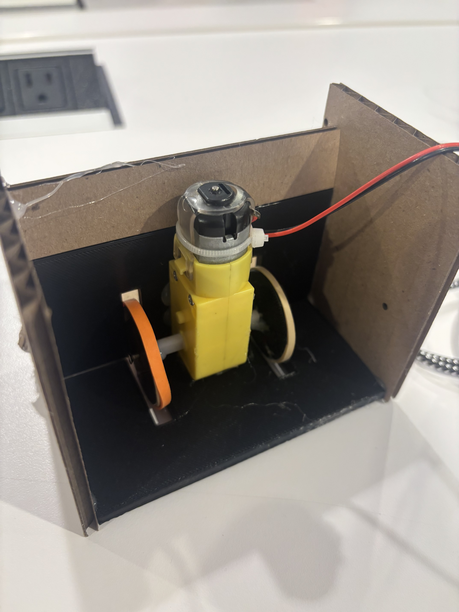
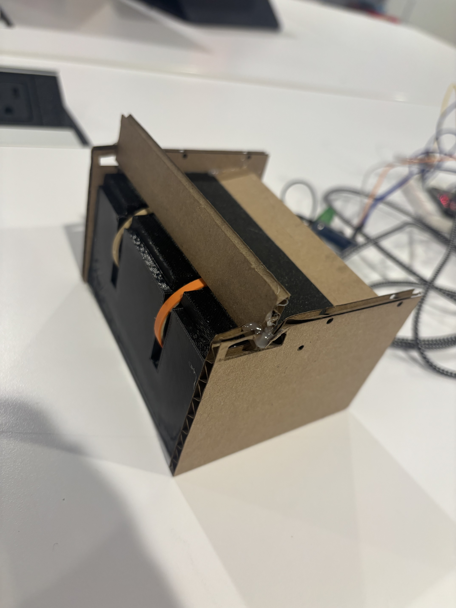
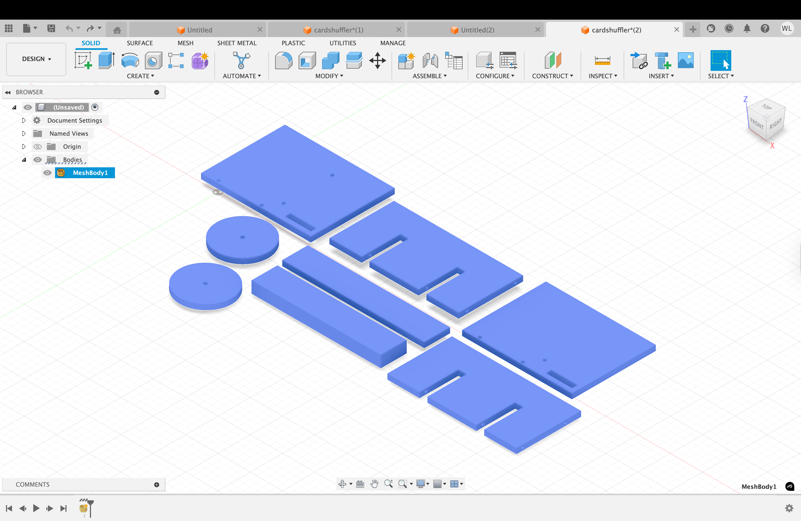
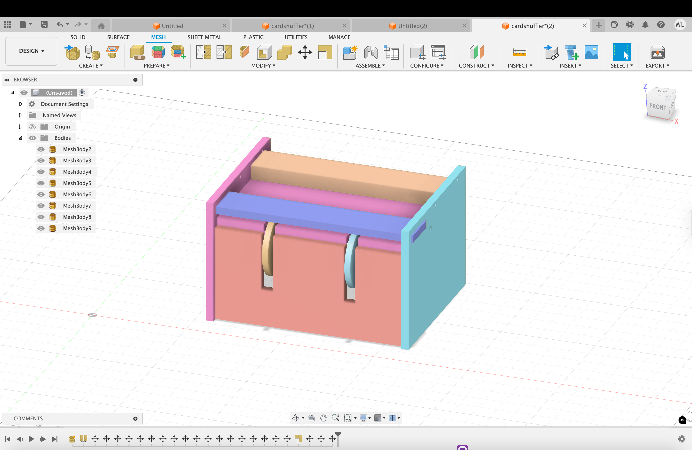
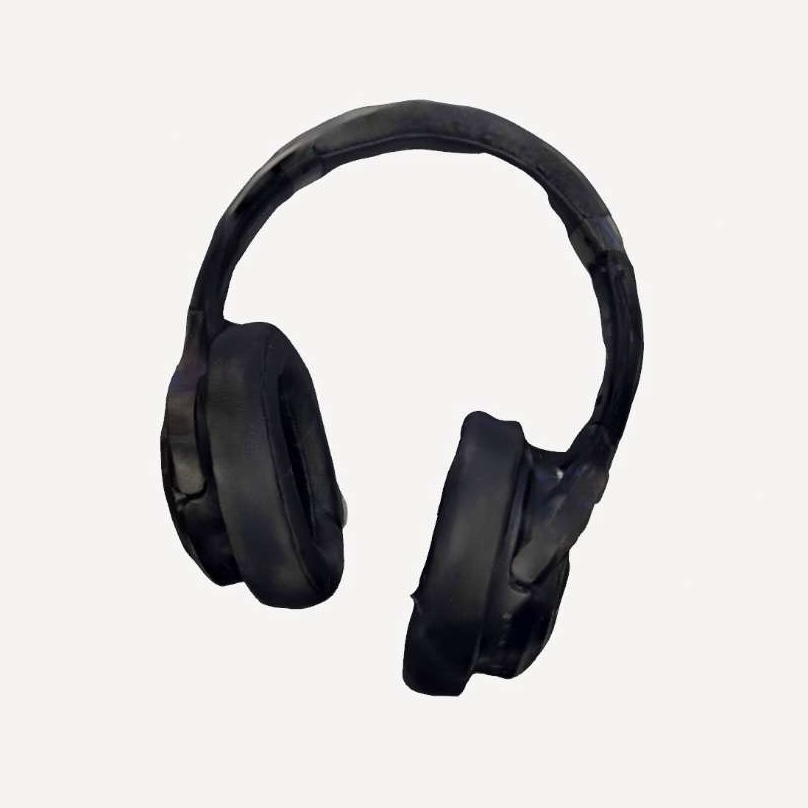
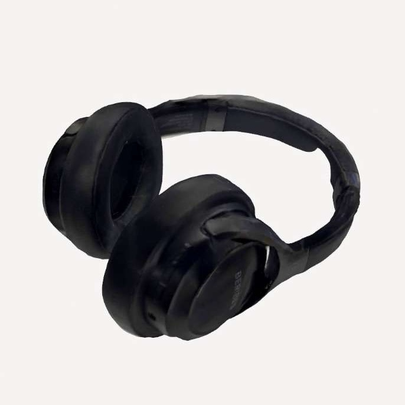
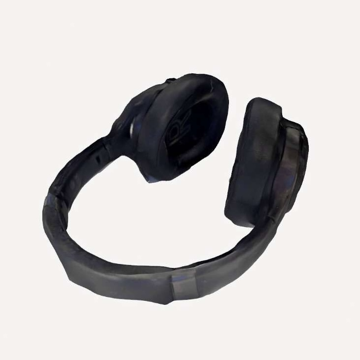

<div class="textcontainer">
<p class="margin"> </p>
<h3>Week 5: 3D Design & Printing</h3>
<p class="margin"> </p>
<h2><b><u><i>Card Shuffler:</h2></u></b></i>
<p class="margin"> </p>
<h4> For my 3d printing project, I decided to make a component/function of my final project. I thought it would be really cool to make an automatic card shuffler as a feature of my game machine at the end. The cards would first shuffle in the machine, then pass out to each player in the room. I found a function on youtube and used it as a blueprint, and continued to model my own machine. I 3d printed some of the components (not all because I wanted to test it and save time on the 3d printer) and plan to 3d print the entire machine at the end.
<p class="margin"> </p>

 </p>
<h6> <b>Find the link to the blueprint <a href="https://www.youtube.com/watch?v=kTARmpW6t8g">here</a>
<p class="margin"> </p>
<h4> I attached a DC motor onto the back of the machine and 3d printed the wheels/ walls. I attached rubber bands onto the wheels to create enough fiction for the cards to go through. After a few tests, the machine finally worked and was able to push out cards into a middle pile:
<p class="margin"> </p>
<img src="cshufflergif.gif" alt="Flowers in Chania" width = 200;
</div>
<p class="margin"> </p>
<h6><b> In my final project, I'll have two machines launching cards in the middle, therefore shuffling cards evenly. I just wanted to test out the functionality of one of them.
<p class="margin"> </p>
<h4> For my 3d modeling, I used parameters to measure out the card dimensions. Next time im going to measure out drill holes to make a stable build. This prototype helped me visualize the function of my final design.
<p class="margin"> </p>

<h6><b><a download href='./cardshuffler.stl'>
Download the STL file </a></b></h6>
<p class="margin"> </p>

<h6><b><a href='./CARDSHUFFLER.f3d'download>Download the 3D model file</a></b></h6>
<p class="margin"> </p>
<img src="prusa 2.png" alt="Flowers in Chania" width = 300;
</div>
<h6><b><a download href='./William_cardShuffler.gcode'>Download the gcode file </a></b></h6>
<p class="margin"> </p>
<h2><b><u><i>3D Scan:</h2></u></b></i>
<h4> Due to a big line at the revoscanner, I decided to try out an application on my phone for scanning. I tried scanning my headphones, and they turned out decently well. At first, the scan caught lots of the table but I was able to trim it down. It's not perfect, but the app still did a good job. I used an app called "Polycam," which would allow you to take multiple photos from different angles and generate your scan.
<p class="margin"> </p>



<p class="margin"> </p>
<h6><b><a download href='./headphones.zip'>Download the scan file here (GLTF) </a></b></h6>
<p class="margin"> </p>
<h2><b><u><i>Final Project Updates:</h2></u></b></i>
<h3><b> Project goals: <h3> </b>
<h4> Rather than simply an uno machine, I want to make a general purpose type game machine that I can use to play with my friends. For functionalities, I want it to be able to shuffle cards and distribute cards based on the amount of players.
<style>
table, th, td {
border:1px solid white;
color: white;
}
</style>
<body>
<h3><b> Bill of Materials: <h3> </b>
<table style="width:100%" >
<tr>
<th><i>Material</th>
<th><i>Purpose</th>
</tr>
<tr>
<td><h5><b>Wood</td>
<td><h5>Laser cutter: I need wood for the base and some components of the box holding the cards.</td>
</tr>
<tr>
<td><h5><b>3D printing</td>
<td><h5>Majority of the machine will be 3D printed. I want to 3d printer gears and control them with a microcontroller at specific angles. </td>
</tr>
<tr>
<td><h5><b>Servo motor (?)</td>
<td><h5>Not too sure about this one yet: I want to somehow turn the entire mechanism to face each player, and a servo motor seems ideal but only turns 180.</td>
</tr>
<tr>
<td><h5><b>Motion sensor [TBD]</td>
<td><h5>Potentially, I want to try coidng the machine to turn/distribute cards to whoever is pressing/apply pressure on the table.</td>
</tr>
</table>
<h3><b> Timeline: <h3> </b>
<h4>This week, I want to figure out the motorization for spinning the mechanism. I also want to print out a cardboard prototype of my updated card shuffler function.
Next week, I want to test if the sensors work or not -- and possibly look into a LED screen.
TBD.
</div>